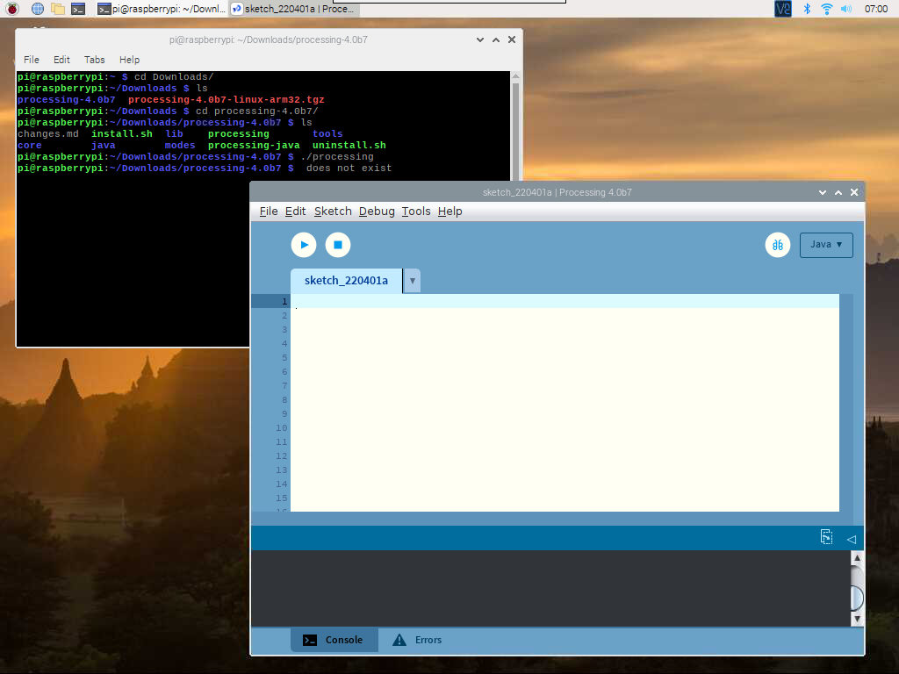

Note
Hello, welcome to the SunFounder Raspberry Pi & Arduino & ESP32 Enthusiasts Community on Facebook! Dive deeper into Raspberry Pi, Arduino, and ESP32 with fellow enthusiasts.
Why Join?
Expert Support: Solve post-sale issues and technical challenges with help from our community and team.
Learn & Share: Exchange tips and tutorials to enhance your skills.
Exclusive Previews: Get early access to new product announcements and sneak peeks.
Special Discounts: Enjoy exclusive discounts on our newest products.
Festive Promotions and Giveaways: Take part in giveaways and holiday promotions.
👉 Ready to explore and create with us? Click [here] and join today!
Play with Processing
What is Processing？
Processing is a simple programming environment that was created to make it easier to develop visually oriented applications with an emphasis on animation and providing users with instant feedback through interaction. The developers wanted a means to "sketch" ideas in code. As its capabilities have expanded over the past decade, Processing has come to be used for more advanced production-level work in addition to its sketching role. Originally built as a domain-specific extension to Java targeted towards artists and designers, Processing has evolved into a full-blown design and prototyping tool used for large-scale installation work, motion graphics, and complex data visualization.
Processing is based on Java, but because program elements in Processing are fairly simple, you can learn to use it even if you don’t know any Java. If you’re familiar with Java, it’s best to forget that Processing has anything to do with Java for a while, until you get the hang of how the API works.
This text is from the tutorial, Processing Overview.
Install the Processing
Note
Before you can use Processing, you need to access the Raspberry Pi desktop remotely (Remote Desktop) or connect a display for the Raspberry Pi.
Welcome to Machining! First visit https://processing.org/download and select the Linux ARM32-bit version
You will then download to a .tar.gz file that should be familiar to most Linux users.
Download the file to your home directory, then open a terminal window and type:
tar xvfz processing-xxxx.tgz
(Replace xxxx with the rest of the file’s name, which is the version number.) This will create a folder named processing-2.0 or something similar. Then change to that directory:
cd processing-xxxx
and run it:
./processing
With any luck, the main Processing window will now be visible.
Install Hardware I/O
In order to use the Raspberry Pi’s GPIO, you need to manually add a Hardware I/O library.
Click Sketch -> Import Library -> Add Library...

Find Hardware I/O , select it, and then click Install. When done, a checkmark icon will appear.